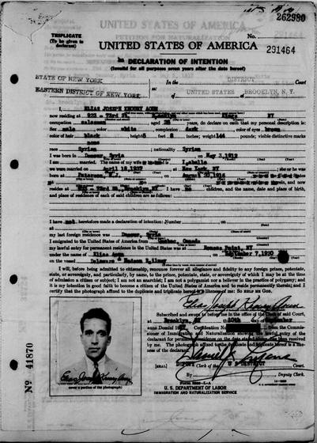
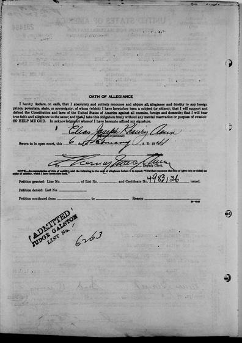

Known as Louis in most records. He was a partner in Awn’s Specialty Shop, a Wall Street area fixture for over fifty years.
Elias (Louis) Awn: photograph on his declaration of intention, 1937. The signature is partly covered by a printed note; we read it as "Elias Joseph Khoury Aoun". From the record.

- Born
- 3 May 1912
- Citizen
- 6 February 1941
- Married
- Isabel Awn, 18 April 1937, Brooklyn; four children
- Died
- 5 January 2001
- Parents
- Joseph (Youseuf) Aoun and Assin Aoun
- Late entry on the border card?
- Elias’s papers give 7 September 1920, two days after the others.
Spellings in the records: Elias (1920 manifest), Louis J. Awn (marriage certificate and census).
Read the full story All the people
Documents about Elias (Louis) Awn

Document 19Elias's declaration of intention, 1937
Document 21Elias's oath of allegiance, 6 February 1941 Document 48Louis and Isabelle sail on a cruise, 20 April 1937
Document 48Louis and Isabelle sail on a cruise, 20 April 1937 Document 54Louis and Isabel's marriage certificate, 18 April 1937 (with their signatures)
Document 54Louis and Isabel's marriage certificate, 18 April 1937 (with their signatures)A plain statement comes from a record we hold. “The family says” means we were told it and have not found a record. “Probably” means it fits the records but is not proven. Living relatives are not listed.